✦
web・UI/UXを中心に、要件整理から画面設計、Figma制作、実装を見据えたデザインまで伴走します。事業やチームの状況を一緒に整理しながら、使いやすく成果につながる形へ落とし込みます。
公開できる範囲で掲載しています。制作プロセスや担当範囲まで見たい方は、パスコードで詳細閲覧モードに切り替えてください。
詳細をご確認できます。限定公開を解除しています。各実績をクリックすると、制作プロセスや担当範囲までご覧いただけます。
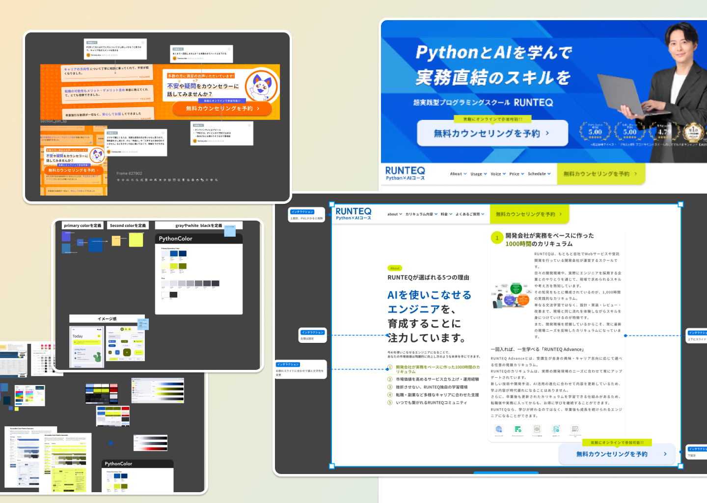
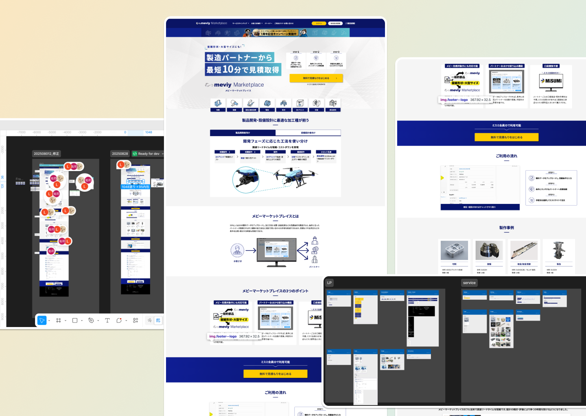
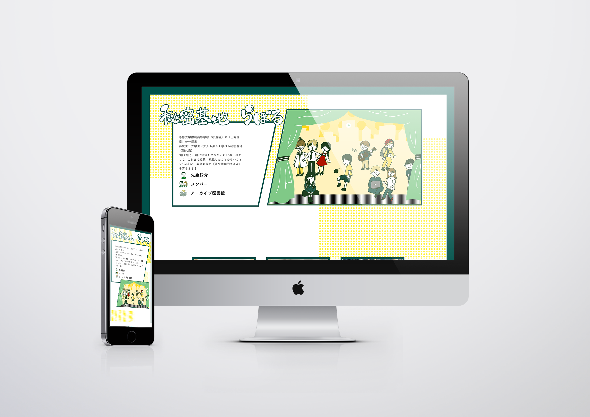
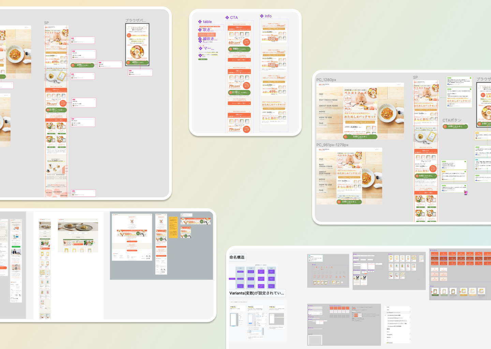
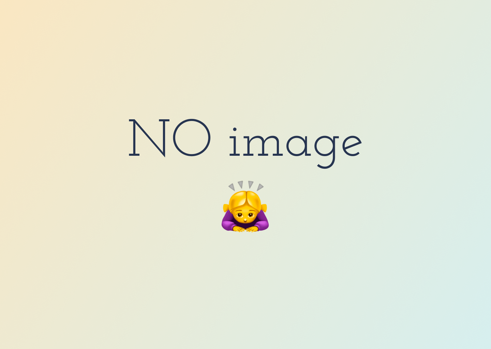
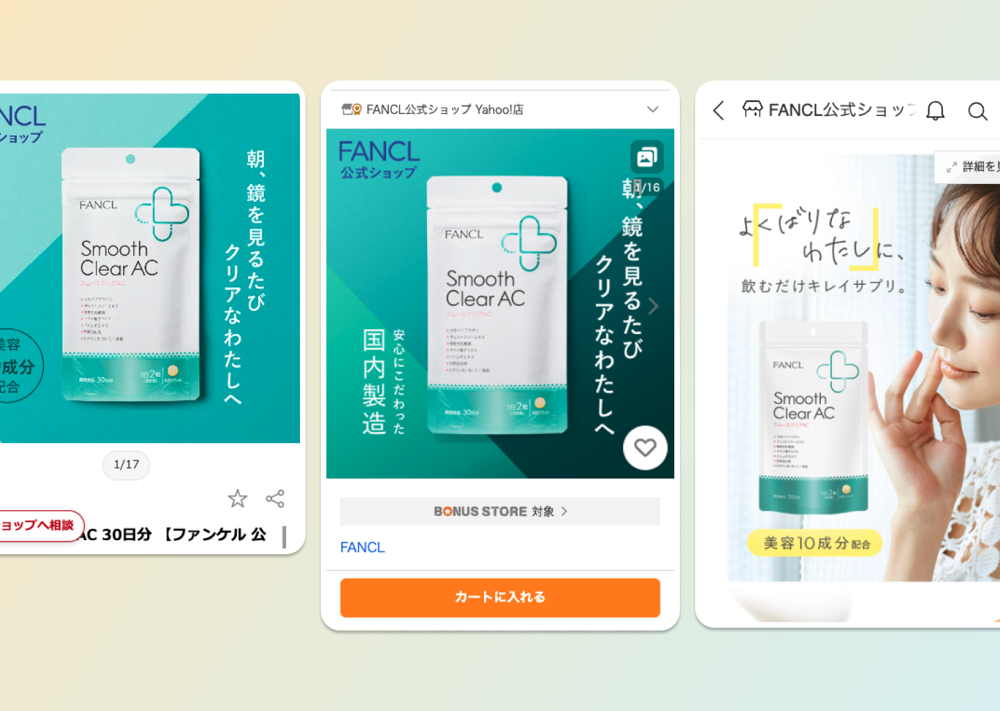
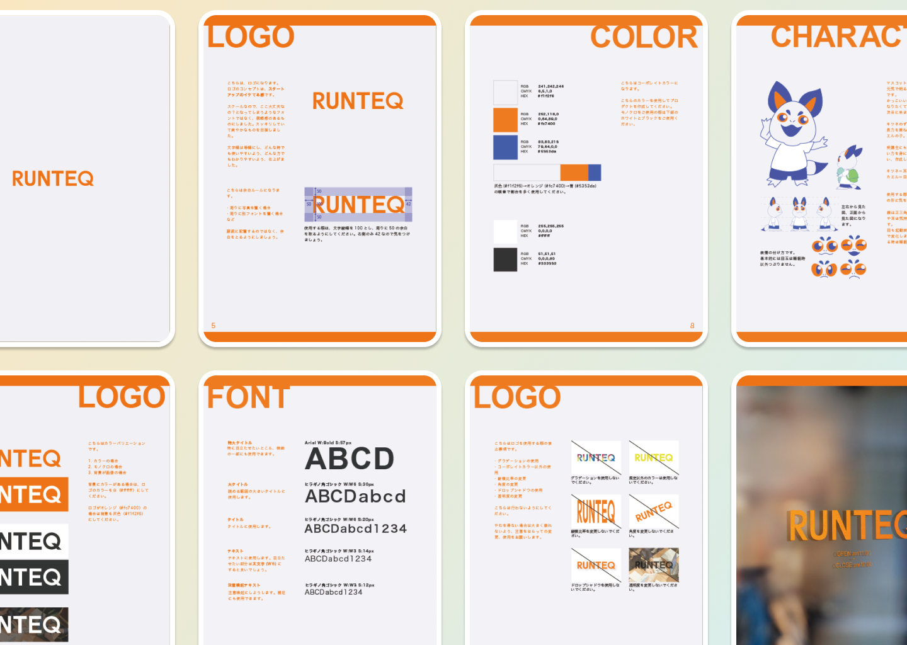
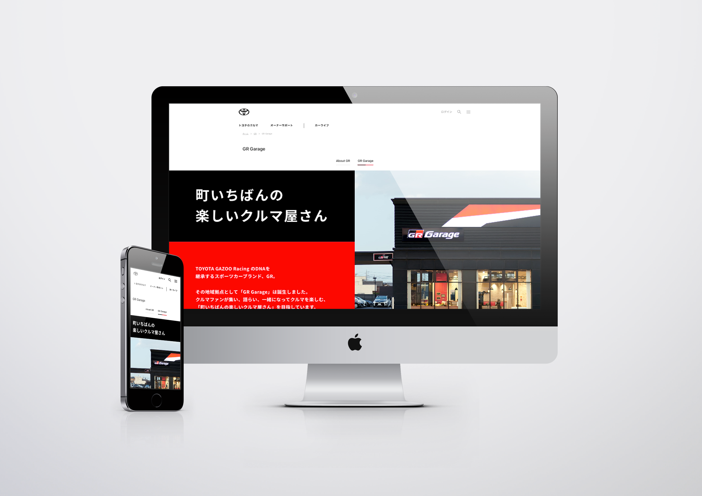
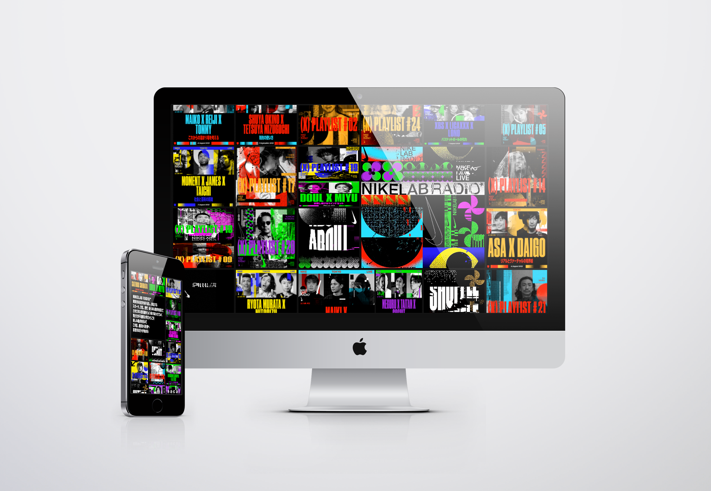
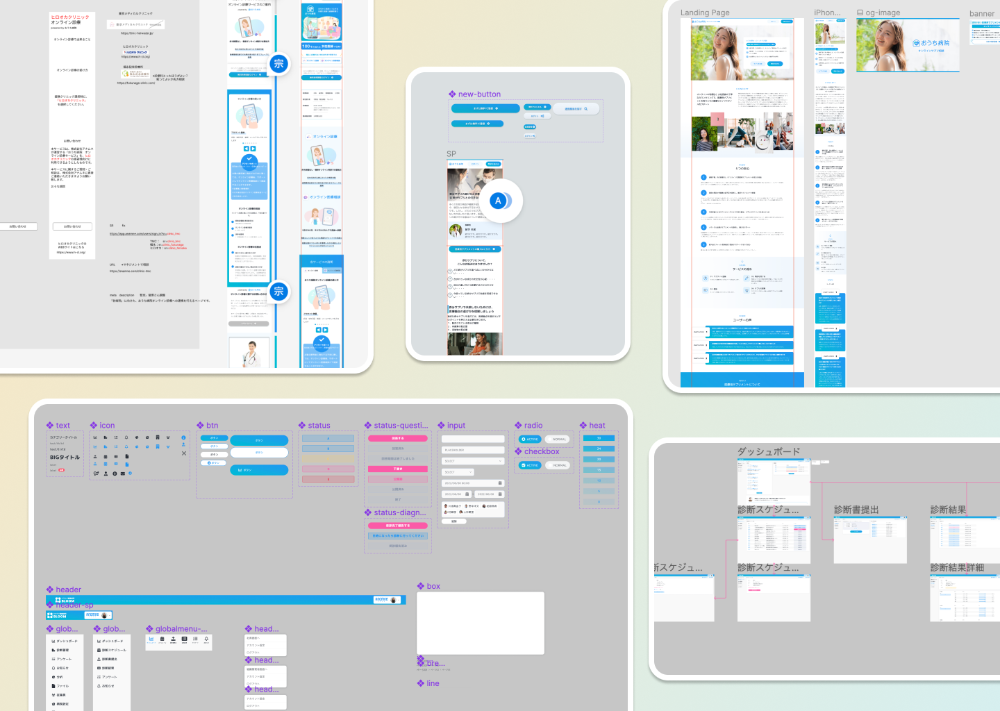
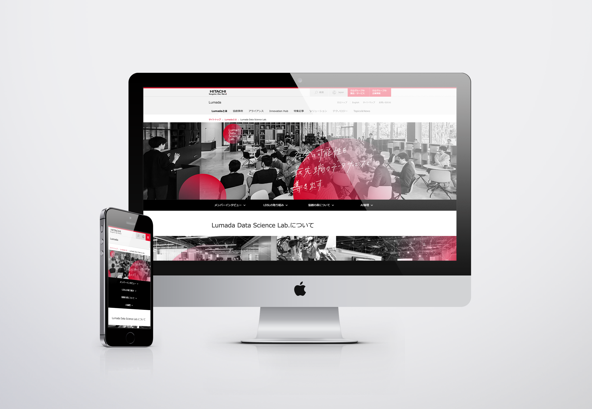
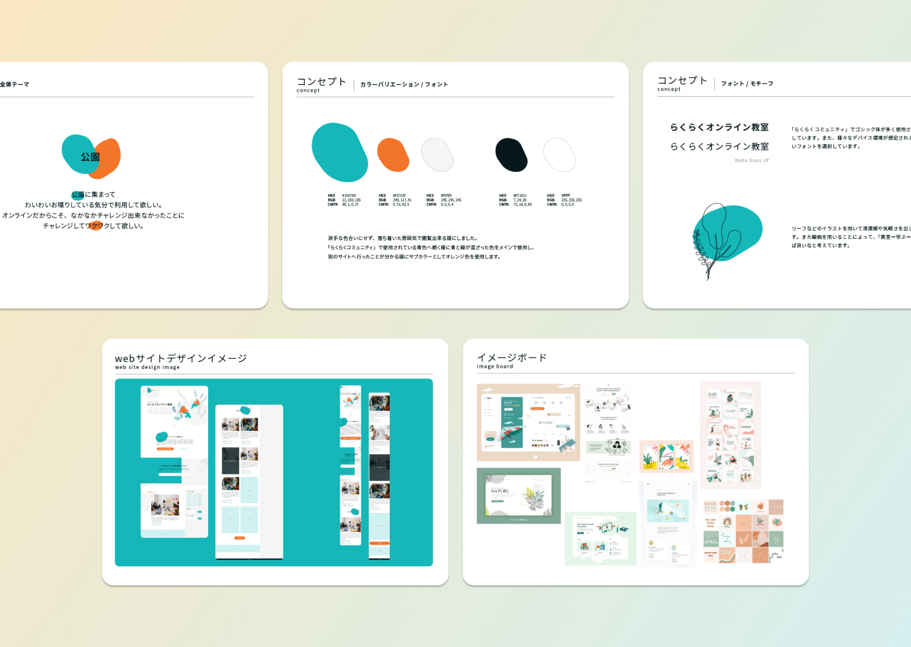
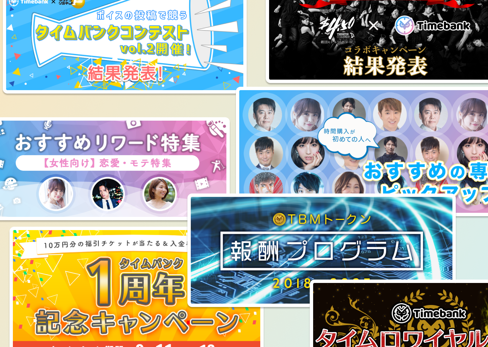
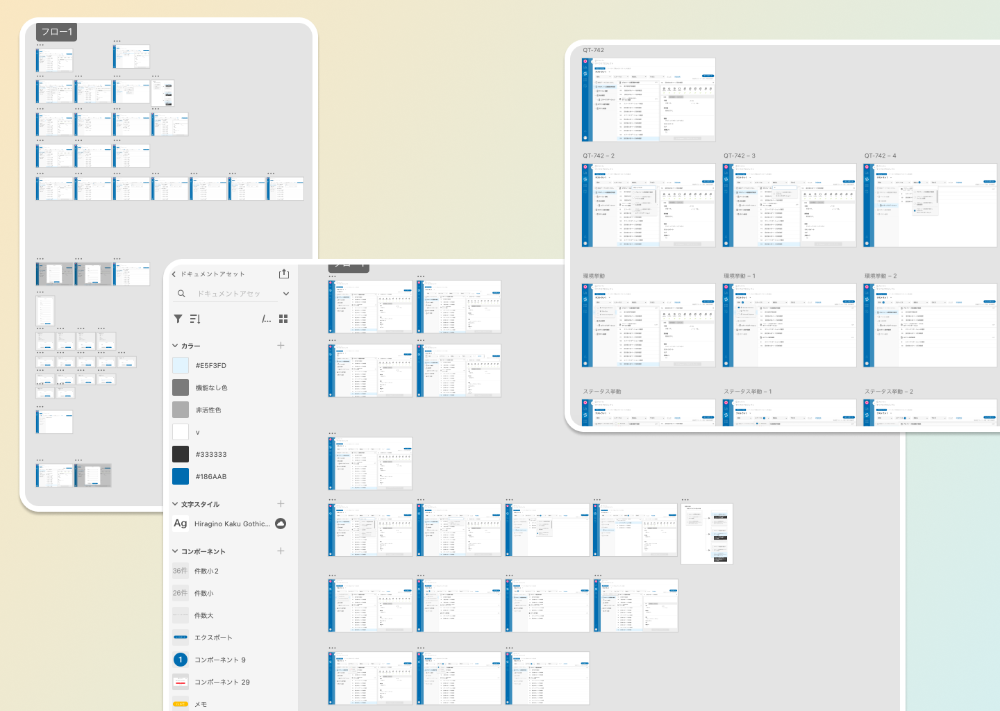
制作会社、フリーランス、事業会社での業務委託を経て、現在もフリーランスとして活動しています。サービス改善、LP制作、ブランド設計、Figma運用整理まで、チームの一員として事業に必要なデザインを支えます。
入社前アルバイトより、web・UI/UX・コーディングを主に担当。業務委託会社だったため、お客様のご意見ややりたいことをお聞きしながら業務を進めていました。
大きなプロジェクトとしては、社長が旗振りを行っていたエンジニアスクールのブランディングをデザインリーダーとして担当。
卒業制作で作成していたペット x ITを現実化させるため、社会についてもっと知りたいと考え退職へ。
前社でお世話になっていた案件を主に、web・UI/UX・コーディングを担当。
チームラボ様、GoodPatch Anywhere様、Cecai様などから仕事を受け、デザイナーとして経験を重ねました。
そのほか、キャラクターデザインやチラシ・名刺などの紙ものデザインも担当。
卒業制作でも扱っていた犬猫の保護犬猫問題などを解決していこうというマインドに共感し、参加。
web・UI/UXを中心に、コーポレートの更新やユーザーが使用するサービスの改善、Figmaの整理整頓を担当。
Figma上のデザインシステムを整理し、社内に浸透させる取り組みも行いました。そのほか、バナー作成・紙もののデザインなども担当。
フリーランス活動を再開し、UI/UX、web、コーディング、印刷物など、デザインできるもの・改善したいものを区別せず担当。
株式会社ミスミさんに2024年3月から2025年9月まで参加。2025年10月より一時お休みし、2025年11月より以前の勤め先RUNTEQのお手伝いを時短稼働で開始。
「何を作るか」の整理から、画面設計、Figma制作、実装を見据えた調整まで相談できます。
デザイナーのあべともかです。web・UI/UXを中心に、Figmaでの画面設計、LP制作、サービス改善、実装を見据えたデザインを行っています。
「どこから整えるべきか」「なぜその改善が必要か」を一緒に言語化しながら、事業側・開発側の両方が動きやすい状態を作ることを大切にしています。
web・UI/UXデザイン、LP制作、サービス改善、Figma整理、要件定義からのご相談まで対応できます。まだ固まっていない段階でもお気軽にご相談ください。